La bibliothèque standard (au singulier) du langage C désigne un ensemble de modules définissant des constantes, des types et des fonctions spécifiées par la norme du langage – on parle ici de « constantes » et de « fonctions » au sens large, car il peut aussi s'agir de pseudo-constantes et de macro-commandes. En principe, toute chaîne de compilation du langage C doit pouvoir traiter du code source employant les éléments définis dans la bibliothèque standard, quel que soit l'environnement de programmation et la machine cible, autrement dit avec une portabilité optimale (cf. chap. C1‑I ).

Et il en est de même du langage C++, qui dispose aussi de sa propre bibliothèque standard. Cette dernière inclut la quasi-totalité de la bibliothèque standard du langage C ainsi que plusieurs dizaines d'autres modules qui exploitent les éléments concepts de la programmation orientée objet.
Par ailleurs, il existe une immense variété d'autres modules de bibliothèques spécifiques à tel ou tel environnement : fonctions graphiques sur moniteur, manipulation de processus systèmes, protocoles de communication, etc. Ces modules ont une portabilité moindre que ceux de la bibliothèque standard, mais sont le plus souvent incontournables pour coder rapidement des fonctions complexes. Une partie de ces modules est librement accessible sur des sites de dépots comme GitHub W ; il serait donc dommage s'en priver. Ensuite, en partant de cette base, rien n'interdit d'en améliorer le codage.

En particulier, l'environnement Arduino est défini par une bibliothèque que l'on peut considérer comme « standard », dans la mesure où elle est indispensable à la compilation d'un source pour cartes Arduino, avec des spécificités pour telle ou telle famille de microcontrôleur embarqué. On parle du noyau (Arduino core) et ses fichiers source sont tous en libre accès.
De plus, il existe aussi une grande variété d'autres modules spécifiques compatibles avec l'environnement Arduino. Ces modules ont été développés pour faciliter l'emploi de composants périphériques à une carte à microcontrôleur : boucliers multi-fonctions, écrans, capteurs en tous genres, actionneurs…
Si l'on s'en tient aux seules bibliothèques standards, ces modules totalisent des centaines de fonctions. Au regard d'une telle diversité, il n'est pas question ici de les présenter en détail ; les sites de référence sont là pour ça.
Ce chapitre a donc pour objectif de fournir une brève description et un lien de documentation des principaux modules de la bibliothèque standard du langage C (et leur équivalent en C++). Certains modules ayant une importance toute particulières (par exemple, stdio), ils feront l'objet des chapitres de cours à part entière.
Et pour l'environnement Arduino, après avoir rappelé le lien vers le site de référence des fonctions de base, on passe en revue les modules développés pour les composants périphériques les plus populaires.
La bibliothèque standard des langages C et C++
Généralités
La bibliothèque standard du langage C – dite ISO C library W – totalise plusieurs centaines de fonctions, réparties sur 29 modules.
Cela peut sembler volumineux pour un codeur débutant, mais en comparaison avec d'autres langages, cette bibliothèque est volontairement réduite, afin d'optimiser la portabilité du langage.
Tous les fichiers sources des modules de la bibliothèque standard du langage C sont libres de droits. Néanmoins, leur code est souvent très complexe et il en existe différentes implémentations selon l'environnement de programmation et la distribution.
C'est donc plutôt à l'aide de livres et de sites de référence – comme par exemple Cppreference.com C – que les codeurs consultent le contenu de ces modules et trouvent notamment les prototypes des fonctions qui sont à leur disposition.
Dans le module stdlib, on trouve notamment les fonctions de conversion atoi (ASCII to int), atol (ASCII to long) et atoll (ASCII to long long).
Sur le site Cppreference.com, ces fonctions sont décrites dans une page web C dont une capture d'écran partielle est reproduite ci‑dessous :
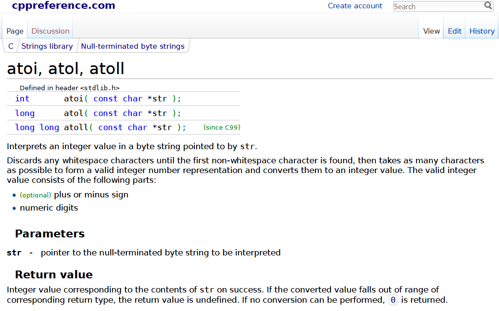En plus des prototypes respectifs de fonctions, on trouve une brève mais précise description :
- du traitement qu'elles opèrent – ici, la conversion d'une chaîne de caractères numériques en une valeur entière ;
- de l'argument qu'elles prennent (rubrique « Parameters ») ;
- de la valeur qu'elles rendent (rubrique « Return value »).
Plus loin (mais non reproduit ci‑dessus) sont donnés des exemples directs d'application dans une fenêtre interactive. On peut donc modifier et tester l'exécution de code proposé en exemple pour en parfaire sa bonne compréhension.
Cas du langage C++
Le langage C++ possède aussi une bibliothèque standard qui comporte, depuis l'adoption de la norme C++20, 75 modules W.
En comparaison avec celle du langage C, la bibliothèque standard du C++ offre une bien plus grande variété de fonctions, types, etc. tout en satisfaisant à l'exigence d'une bonne portabilité.
Parce que le langage C++ est beaucoup plus développé que le C, et qu'il est massivement utilisé pour produire de grands logiciels professionnels (CAO, bureautique, comptabilité, etc. – cf. chap. C1‑II ), sa bibliothèque standard représente un enjeu très important. C'est seulement en septembre 2019 que l'entreprise Microsoft a rendu publique son implémentation.
Il existe également l'implémentation de la fondation Apache W dont les fichiers source sont en libre d'accès. Mais comme avec le langage C, pour prendre connaissance des prototypes des fonctions du C++, il préférable dans un premier temps de consulter les sites de référence en ligne, comme Cppreference.com C++.
Compatibilité et spécificité des bibliothèques standards de C et C++
On rappelle (cf. chap. C2‑I ) que dans un programme en langage C, il est impossible d'inclure un fichier d'en‑tête de la bibliothèque standard du C++. (On est sûr de déclencher une erreur de compilation dès lors que ce fichier emploie des mots‑clefs spécifiques au C++.)
En revanche, l'inverse est faisable : par exemple, une directive comme #include <ctype.h> (fichier de la bibliothèque standard du C pour déterminer des types de caractères – cf. chap. C3‑VIII ) est autorisée dans un programme compilé en C++.
Toutefois, en C++, les modules de la bibliothèque standard du langage C sont considérés comme obsolètes (en anglais, deprecated).
À la place, il est recommandé de privilégier le recours aux modules correspondants du C++, sachant que le nom de leur fichier d'en‑tête :
- ne comporte pas d'extension
.h; - reprend exactement celui du langage C mais préfixé par la lettre
c.
Dans l'exemple donné ci‑dessus, on codera donc de préférence :
#include <cctype>
Il faut ne pas confondre :
- le module
cstdioqui est l'adaptation en C++ du module d'entrées‑sorties standardstdiodu langage C - avec le module
iostreamqui regroupe les fonctions d'entrées‑sorties standards en C++ – qui opèrent avec une syntaxe complètement différente.
Quelques modules standards d'emploi fréquent
Les tableaux synthétiques ci‑après sont non exhaustifs et n'ont nullement vocation à se substituer à ceux que l'on peut trouver sur les sites de référence. Leur principal intérêt est :
- d'indiquer les noms des fichiers à inclure par des directives
#include; - de citer quelques fonctions qui pourront être utiles par la suite, notamment lors des travaux pratiques.
De plus, pour chaque module, l'indication de la norme requise (2e colonne du tableau) n'est pas superflue :
- elle doit être respectée par le script de compilation pour permettre l'inclusion de ces modules (cf. chap. C1‑II ) ;
- un tiret « – » signifie que ce module existe depuis l'origine du langage et donc qu'en principe, n'importe quelle version du compilateur le prend en charge ;
- une astérisque « * » signifie qu'il s'agit d'un module optionnel, au sens où la norme n'impose pas aux implémentations d'inclure ce module .
Modules communs au C et au C++
| Nom C / C++ |
Norme requise |
Types et/ou fonctions codées |
|---|---|---|
stdlib.h cstdlib |
– |
fonctions générales :
|
stdarg.h cstdarg |
– |
types et fonctions pour le codage de fonctions à arguments variables (notamment la fonction main)
|
stdbool.h cstdbool |
C99 C++11 |
type booléen et constantes (bool, true, false…) remarque : cstdbool est inutile car déjà inclus dans le noyau du C++
|
stdint.h cstdint |
C99 C++11 |
types entiers de taille spécifiée (int_8t, int_16t…)
|
limits.h climits |
– |
fonctions donnant les valeurs extrêmes encodables dans les types entiers pour la machine cible (CHAR_MIN, CHAR_MAX…)
|
float.h cfloat |
– |
fonctions donnant les valeurs caractéristiques d'encodage dans les types décimaux à virgule flottante pour la machine cible (FLT_MIN, FLT_MAX…)
|
math.h cmath |
– | constantes et fonctions mathématiques les plus usuelles (trigonométriques, exponentielles, logarithmique…) |
complex.h complex |
C99 * |
types, constantes et fonctions mathématiques opérant sur les nombres complexes (creal, cimag…)
|
time.h ctime |
– |
types, constantes et fonctions opérant sur les données temporelles (tm, time, difftime…)
|
ctype.h cctype |
– |
fonctions d'évaluation et de manipulation de caractères (isalpha, isdigit, toupper…)
|
string.h cstring |
– |
fonctions d'évaluation et de manipulation de chaînes de caractères (strlen, strcat…)
|
stdio.h cstdio |
– |
fonctions d'entrées-sorties sur terminal standard, fichiers et chaînes de caractères (printf, scanf… )
|
Les modules usuels du framework Arduino
Le noyau Arduino
On rappelle que d'un point de vue logiciel, l'environnement Arduino est constitué d'un noyau défini dans un ensemble de modules de bibliothèque donc le fichier d'en‑tête principal est nommé Arduino.h (cf. chap. C1‑III ). L'implémentation du noyau dépend du type de carte employé. Pour les cartes à cœur AVR, les fichiers sources du noyau sont publiés ici G.
Toutefois, comme pour les fichiers de bibliothèque standard des langages C et C++, il est préférable de consulter un site de référence – en premier lieu le site officiel d'Arduino A pour prendre connaissance des détails de chaque élément de langage défini.
On trouve ainsi une page consacrée à la fonction isAscii A qui détermine si son argument, de type char, est inclus dans le jeu ASCII restreint.
En règle générale, les pages de références Arduino sont moins précises que celles d'un site comme cpprefecence.com. En effet, la page ci‑dessus n'indique pas le type de la valeur retournée par la fonction isAscii. Pour le savoir, il faut alors consulter le fichier source où cette fonction est déclarée : WCharacter.h. On y trouve notamment le prototype :
inline boolean isAscii(int c) __attribute__((always_inline));
qui lève l'ambiguïté – la fonction retourne une valeur booléenne. Par ailleurs, on peut noter que l'argument pris par la fonction est en fait de type int et non pas char !
Les modules pour composants périphériques
Au delà de la diversité de toutes les cartes à microcontrôleur compatibles, le framework Arduino est devenu un véritable écosystème technique avec le développement d'une grande variété :
- d'extensions qu'on appelle boucliers (en anglais shields) – cf. celui en photo ci‑contre, qui comporte l'électronique de puissance nécessaire pour commander deux moteurs à courant continu ;
- de composants (capteurs, préactionneurs, accessoires de communication, etc.) montés sur cartes électroniques directement raccordables à la carte à microcontrôleur (via des conducteurs enfichables dits jumpers).
Pour permettre de coder très facilement la mise en œuvre du composant dans un programme, un ou plusieurs modules de bibliothèque de fonctions sont développés et mis à disposition gratuitement.
Quelques modules de bibliothèque de périphériques Arduino
Les modules présentés dans le tableau synthétique ci‑après ne constituent qu'une toute petite partie de l'écosystème Arduino. Là encore, toute recherche d'exhaustivité serait vaine.
Pour chaque module, les colonnes du tableau indiquent respectivement :
- le nom du fichier d'en‑tête du module (à inclure), ainsi qu'un lien vers sa documentation ;
- un logo qui indique si le module est inclus dans l'environnement de simulation Tinkercad ;
- une iconographie du composant ou du dispositif matériel auquel le module apporte une solution logicielle ;
- un bref résumé des fonctionnalités que le module implémente.
.h) ; | Nom | Composant | Fonctionnalités | |
|---|---|---|---|
SPI.h A
|
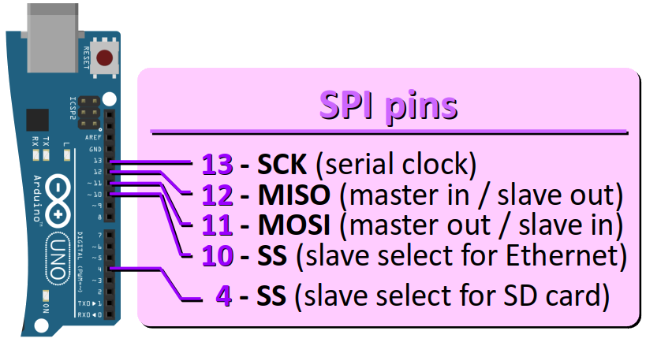 | exploitation du bus SPI (Serial Peripheral Interface W) intégré à la carte à microcontrôleur pour communiquer avec un composant externe (capteur, écran, lecteur-enregistreur de carte, etc.) | |
Wire.h A
|
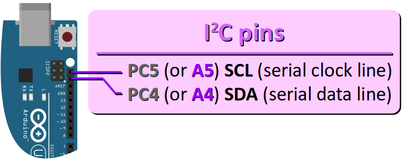 | exploitation du bus I2C (Inter-Integrated Circuit W) intégré à la carte à microcontrôleur pour communiquer avec un composant externe (capteur, écran, etc.) | |
Ethernet.h A
|
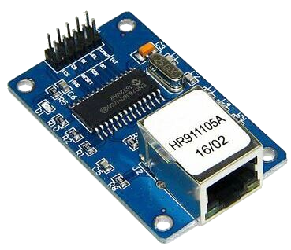 | exploitation d'une liaison Ethernet W via une extension ou un composant externe comportant une prise RJ45 et un circuit intégré dédié à son fonctionnement | |
WiFi.h A
|
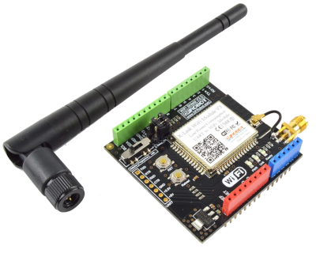 | exploitation d'une liaison Wi‑Fi W via une carte, une extension ou un composant externe comportant une antenne Wi‑Fi et un circuit intégré dédié à son fonctionnement | |
SD.h A SDfat.h G
|
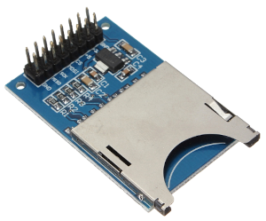 |
lecture/écriture de données sur carte SD ou microSD W via un une extension ou un composant externe comportant un lecteur/enregistreur de carte Attention : pour certains composants (chinois), employer le fichier SDfat.h et non pas SD.h
|
|
EEPROM.h A
|
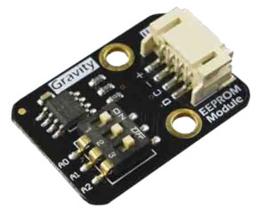 | lecture/écriture de données sur mémoire EEPROM W intégrée au microcontrôleur ou sur un composant externe comportant une puce de mémoire EEPROM | |
RTC.h A
|
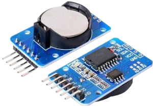 | exploitation d'une horloge temps-réel (real time clock W) intégrée à la carte à microcontrôleur ou sur un composant externe dédié | |
DHT.h G
|
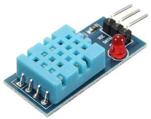 | mesures de température et humidité avec un composant externe dédié comprenant un capteur DHT (digital temperature & humidity sensor ) | |
LiquidCrystal.h A
|
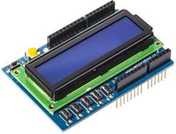 | affichage de caractères sur un écran LCD (liquid crystal display W) porté par un bouclier ou un composant externe | |
Keypad.h A
|
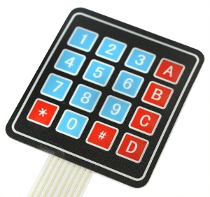 | lecture de caractères saisis sur un pavé alpha-numérique (keypad W) porté par un composant externe | |
Servo.h A
|
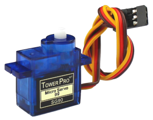 | commande en position angulaire ou en fréquence de rotation du rotor d'un servomoteur de modélisme W | |
Stepper.h A
|
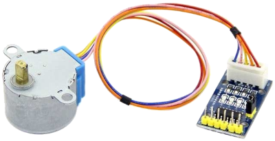 | commande en position angulaire ou en fréquence de rotation du rotor d'un moteur pas-à-pas de petite puissance associé à une carte électronique de puissance (module pilote) W |